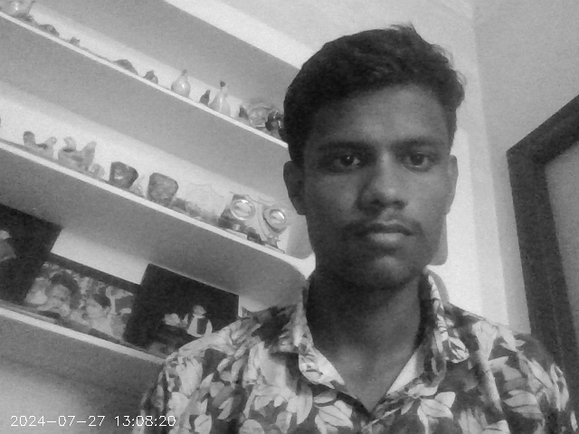
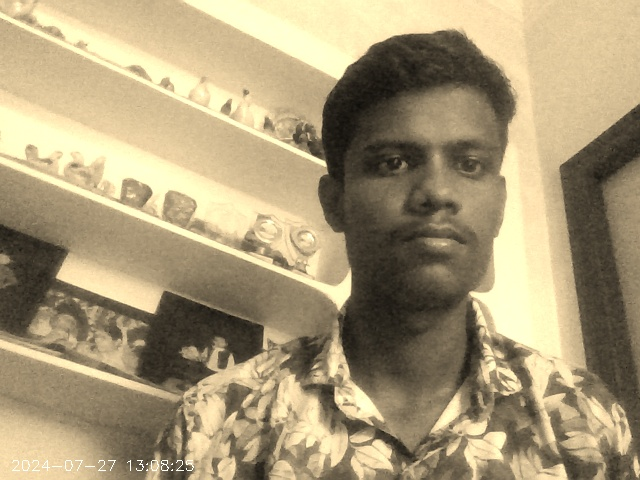
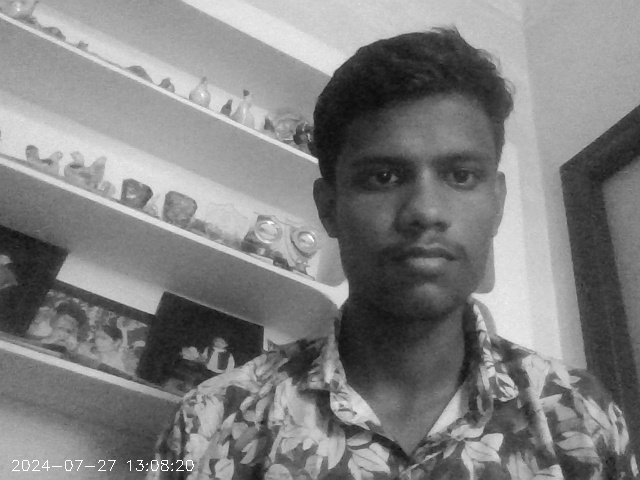
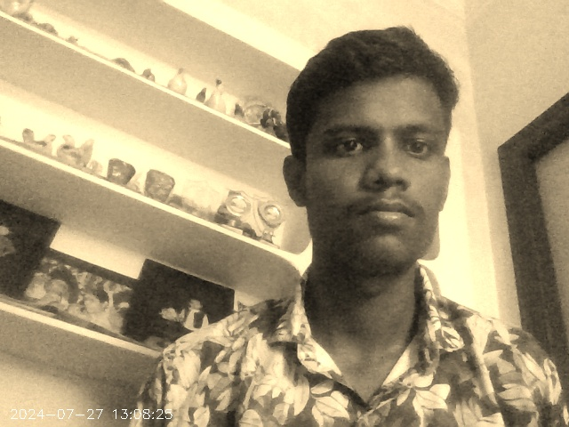

Abstract
In the digital era, the ability to capture and process images and videos has become increasingly important for various applications. This project presents a Python-based application that leverages OpenCV to capture images and videos from a webcam, providing features such as real-time filtering and timestamping. Key functionalities include grayscale and sepia filters, alongside a timestamp display on captured media.
Introduction
In today's fast-paced digital world, visual media has become essential for communication and documentation. This project focuses on developing a webcam-based image and video capture application using Python and OpenCV, offering filters like grayscale and sepia, as well as timestamp functionality for enhanced media control and creativity.
Objectives
The primary objectives of this project are:
1. To develop a user-friendly application for capturing images and videos.
2. To implement features such as filtering (grayscale, sepia) and timestamping.
3. To provide an interactive interface for controlling the capture process.
Tools & Technologies
- Programming Language: Python
- Libraries:
- OpenCV (cv2) for image and video processing
- NumPy for numerical operations
- Datetime for handling timestamps
- Operating System: Compatible with Windows, macOS, and Linux
Code Structure
The key components of the code are:
- Webcam Capture: Capturing video from the webcam using OpenCV's VideoCapture class.
- Image Filtering: Applying filters like Grayscale and Sepia to the captured frames.
- Timestamp Addition: Displaying the current date and time on the captured images and videos.
- Grayscale: Converts the image to grayscale, enhancing contrast and simplifying image data.
Result
The application successfully captures images and videos from the webcam while allowing users to apply filters and add timestamps. Users can save media in their desired format, making it a versatile tool for both personal and professional use.
 



Conclusion
This project demonstrates the power of Python and OpenCV in creating interactive media capture applications. With features like filters and timestamps, it adds significant value for various uses. Future enhancements could include a GUI, additional filters, and higher-resolution video capture options.
References
- OpenCV Documentation
- Python Documentation
- NumPy Documentation
- Datetime Documentation